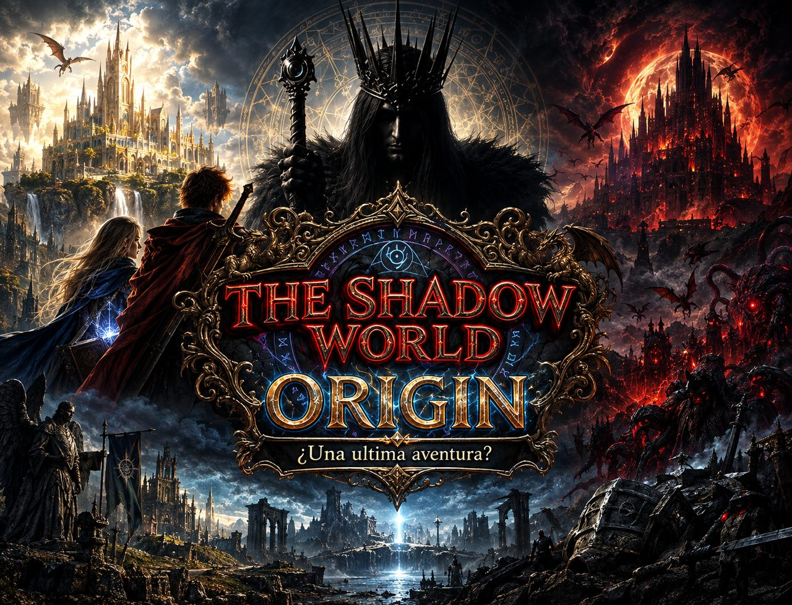

Mejoras gráficas y de juego
- Nuevo sombreado e iluminación.
- Movimiento del personaje mejorado.
- Arreglada la aventurera, la jugadora femenina.
- Nueva interfaz visual en menús y submenús.

Donde las leyendas cobran vida. Forjamos mundos épicos, historias inmersivas y experiencias inolvidables.
Explorar Nuestros Mundos
¿Una última aventura?
La mayor actualización de contenido de The Shadow World hasta la fecha: un lavado de cara técnico y visual completo, misiones diarias y semanales para la Temporada 1 y el relanzamiento de los tres actos originales de la campaña.
Lanzamiento · 20 de octubre de 2026
Muchas de estas mejoras las hemos detectado y decidido añadir gracias a vuestro apoyo en la Guerrilla Game 2026. ¡Gracias!
Adéntrate en un universo sumido en la oscuridad. Descubre los profundos secretos que yacen bajo las sombras en esta aventura épica donde la luz es tu único refugio.
Visitar Portal
Forja tu propio destino en los vastos e imponentes Reinos de Aethermoor. Magia arcaica, acero forjado y un honor inquebrantable te aguardan en tu camino.
Visitar Portal
Una fortaleza maldita se alza entre las llamas. MMORPG 3D de fantasía oscura: crea tu héroe, explora un mundo persistente y enfréntate a sus criaturas junto a otros jugadores. Jugable ya en el navegador.
Jugar ahoraUna nueva historia expandiendo el universo que ya conoces. Nuevos y oscuros desafíos, personajes enigmáticos y misterios por resolver te esperan más allá del límite.
Próximamente
Roguelite de gestión en tiempo real al estilo FTL. Reparte energía, da órdenes a tu tripulación y sobrevive cinco zonas hasta el jefe final. Dos campañas, muerte definitiva. Jugable ya en el navegador.
Jugar ahora